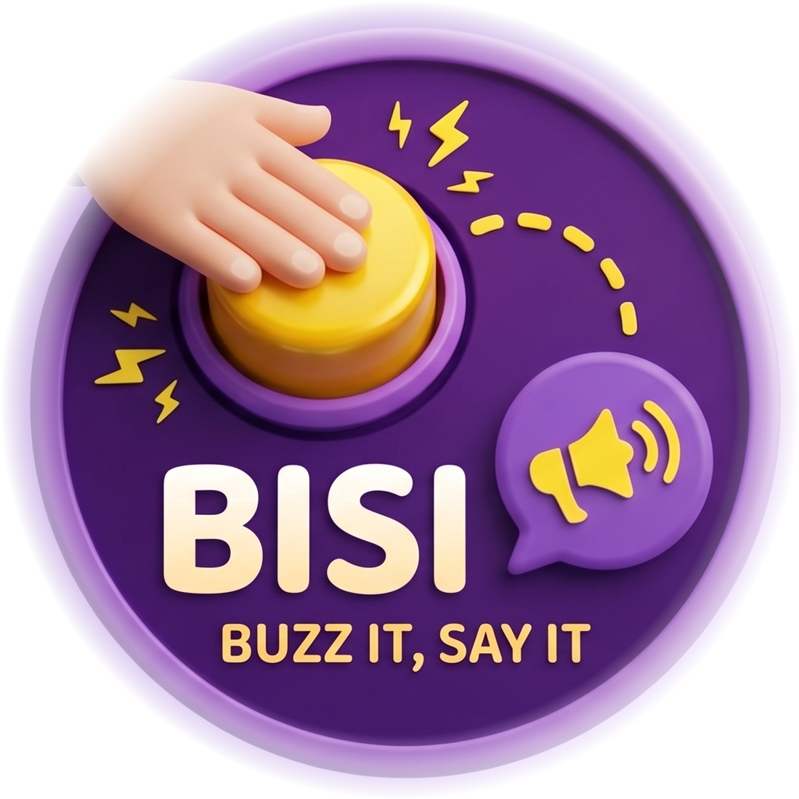
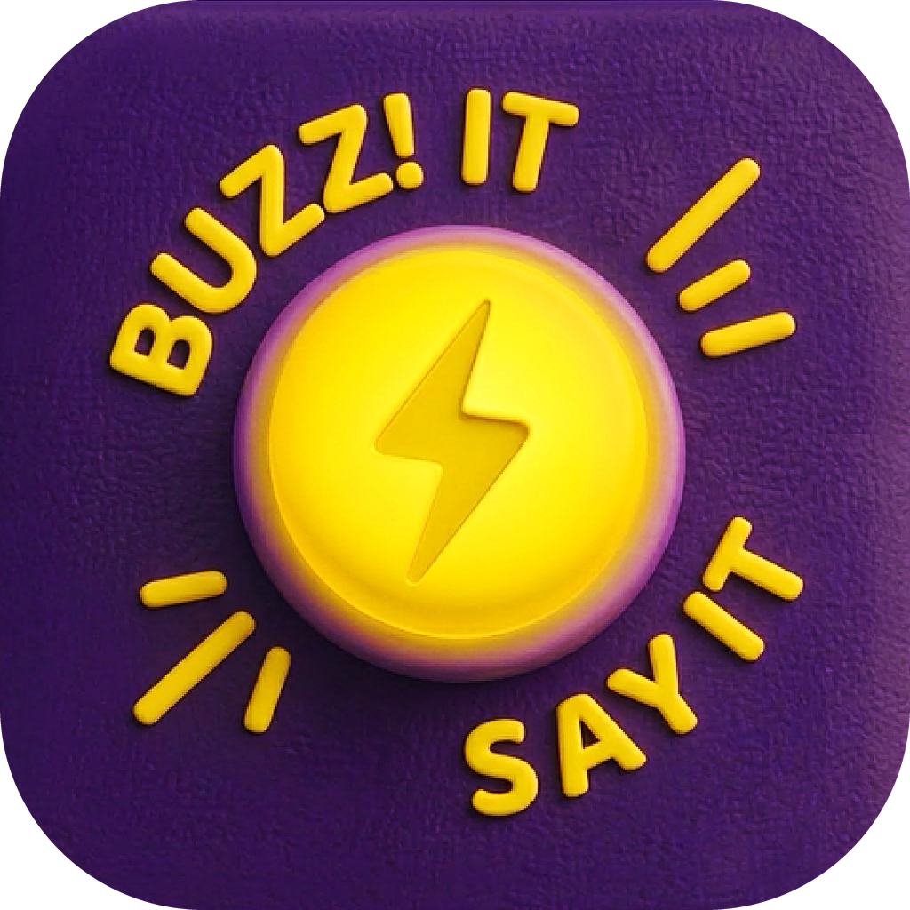
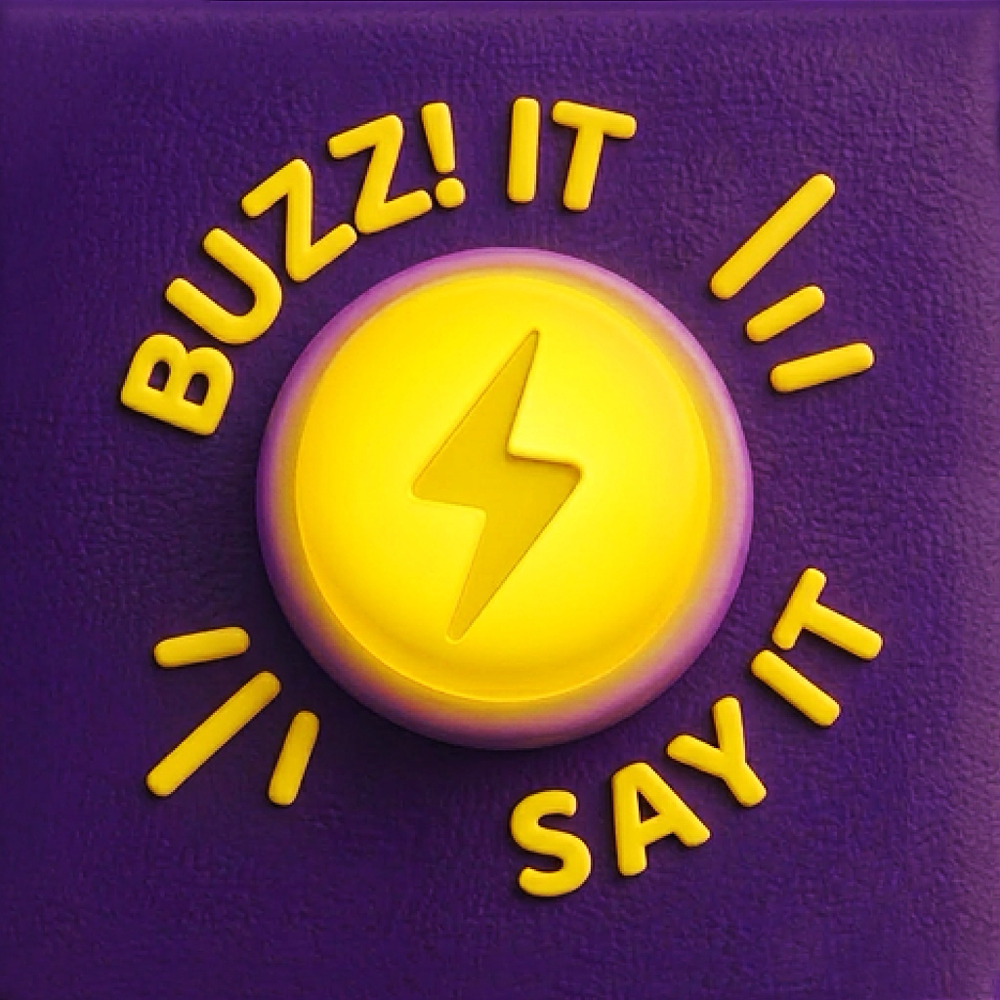
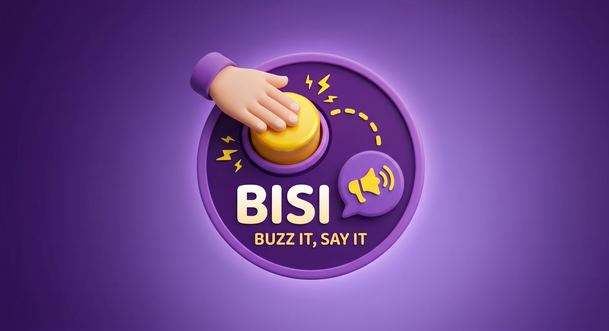

⚡ Startseite
Downloads
Marke & CI
Kontakt
🇩🇪 DE
🇬🇧 EN
🇫🇷 FR
🇪🇸 ES

⚡ Presse & Media Kit
Alles für eure Berichterstattung über BiSi
Media Kit herunterladen
Testzugang anfragen
Auf einen Blick
.
2–10
12
26
4
Über BiSi
Text kopieren
Downloads
.
Dokument
DE
EN
FR
ES
Screenshots
.
Promo-Video
.
Marke & CI
.
Logos & Icons
Logo-Badge · PNG, transparent
Download

App-Icon abgerundet · 1024 px
Download

App-Icon eckig · 1024 px
Download

Header-Bild · 2760 × 1504
Download
Farben
Wortmarke & Typografie
BiSi
.
BUZZ IT, SAY IT!
Do's & Don'ts
Bitte so
Bitte nicht
Pressekontakt
.
hello@buzzitsay.it
Martin Bechtold
·
Entwickler
E-Mail schreiben